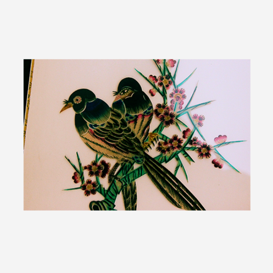

------------
------------为了让孝义皮影更好地在二维中反映出一个人物的特点,艺人在影人形象的塑造上根据剧中人物角色的不同,对脸谱中的眼睛.鼻子,嘴唇等部位都运用了巧妙而又合理的夸张.变形,从而增强了影戏表演的可观性和生动性,深化了人物的典型形象和性格。其人物的夸张造型主要是通过线条的曲折.长短、方圆来表现的,并无造型结构功用,就如同中国画的线条.长短组织、直曲搭配.点线结合,具有一种图案的装饰美。
首先.以平眉和皱眉来区分人物性格的阳刚与阴柔。比如;生.术角以平直的眉毛和细长的眼睛来表现其安详沉着、富有内涵;面旦角以弯眉来表现其秀丽文静的性格;武士则个个是皱眉，表现其英勇刚烈的性格。
首先.以平眉和皱眉来区分人物性格的阳刚与阴柔。比如;生.术角以平直的眉毛和细长的眼睛来表现其安详沉着、富有内涵;面旦角以弯眉来表现其秀丽文静的性格;武士则个个是皱眉，表现其英勇刚烈的性格。
首先.以平眉和皱眉来区分人物性格的阳刚与阴柔。比如;生.术角以平直的眉毛和细长的眼睛来表现其安详沉着、富有内涵;面旦角以弯眉来表现其秀丽文静的性格;武士则个个是皱眉，表现其英勇刚烈的性格。
------------服饰在皮影里叫身段,有龙袍、官衣.铠甲.仙衣.鬼神等。孝义皮影戏大多为人魔戏，人物的服饰均根据其在神话传说中的特殊身份而雕成独具特色的图案，即使同一个人也要根据特定的剧情.心理来设计相应的服饰。用线除了虚线.实线,虚实线之外,绘线及暗线的运用更显别致,虚线使人物的衣饰富丽堂皇，而绘线以黑线为刀,在难以雕镂的微小饰物上描绘,更显细致精巧。雕刻艺人从造型的装饰美出发,对服饰的造型采用了与脸的正侧面造型不同的半侧面造型,也叫“七分身子”。它使服饰的外轮廓丰富自然,又使服饰图案在整体轮廓中有了丰富的、主观生动的变化。
服饰上图案有牡丹.松.鹤.菊花、龙.蟒、水.祥云等,都大胆地吸收了当地民间的刺绣﹑剪纸等艺术形式。这种图案除了根据人物角色.身份来定位,还根据身段的造型来变化。男蟒袍有九龙图案,女蟒袍有二龙戏珠和丹风朝阳的图案;武官服饰上面有鱼鳞甲片.销子连环等图案,表现将军们英勇善战,并含平安吉祥之意;文人雅士的身段图案多以祥云,花为主;平民的服装很少有花纹,所以又称片子,显得简单大方。图案的组成,无论变化与统一,对比与调和.节奏与韵律,放射与回旋,都体现了一种赏心悦目的装饰性和秩序性。它非但不影响人物形象,还会锦上添花。其实际功能就是透光,当光透过这些美丽的图案时,人物形象便会更加丰满。这些花纹也尽量依据人物的侧面相来组织,使人物像具有二维的空间感。
 ------------
------------皮影用不同的色彩来表达人物内心不同的情感，给色彩赋予了生命,并且使人物的性格鲜明。基本色彩以红、黄.绿.黑、白为主,传统颜料以藤黄.铜绿品红为佳。它采用中国民间年画的浓墨重彩的着色方法,以固有色平涂分填,多次烘染,使色彩浑厚沉着,对比强烈,丽而不艳,具有浓厚的民族传统装饰性风格。人物用色单纯洗练,一般仅用红、黑﹑绿,橘黄这几种色纯度,透明度较高的品色渲染，充分利用牛皮本身半透明的土黄固有色谐调镶接,再施以强烈鲜明的装饰色彩,强化人物的个性特征。如:红脸的精忠;黑脸的骁勇﹑铁面无私,憨直;黄脸的狡猾;白脸的奸诈.专横阴险,心术不正等,每种色调都有自身的处理手法和象征意义。生,末角多为阳刻空脸,以空代色,其含蓄的面部在视觉上给人们一种玉颜丽质的色彩联想,透过空间联想达到色的补充,获得无色胜有色的艺术效果。
农着服饰的用色贫富有别,老幼各异。老生老旦用色单纯，多不过两三色,在衣领袖口处以素色空心花纹装饰,显得既朴素又大方;旦角衣着多用高纯度的艳色,经浓墨重压,镂线调和,富丽而不艳目。丑角色彩的运用,是以红花绿叶相杂互托,冷暖对衬，产生不安定的浮躁色调,再用浓墨镂线调和统--,使色调重衬，产生不安定的浮躁色调,再用浓墨镂线调和统一,使色调重新得到协调稳定,取得躁而不浮的色彩效果。穷家生旦影人,多用绿黑黄赭蓝等单色,镂以简练的刀路线条,在影幕.上便形成淳朴素洁的明快色调。用色彩巧妙地烘托角色,准确地表达出了人物的个性特征。
- 
- 顶部